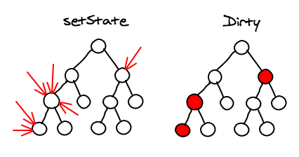
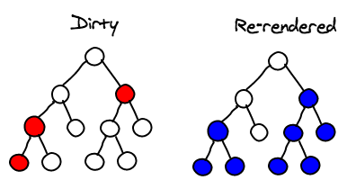
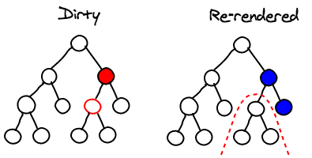

渲染
合并操作
你调用 component 的 setState 方法的时候, React 将其标记为 dirty。 到每一个事件循环结束, React 检查所有标记 dirty 的 component 重新绘制。
这里的"合并操作"是说, 在一个事件循环当中, DOM 只会被更新一次. 这个特性是构建高性能应用的关键, 而且用通常的 JavaScript 代码难以实现。
而在 React 应用里, 你默认就能实现。

子树渲染
调用 setState 方法时, component 会重新构建包括子节点的 virtual DOM。
如果你在根节点调用 setState, 整个 React 的应用都会被重新渲染. 所有的 component, 即便没有更新, 都会调用他们的 render 方法. 这个听起来可怕, 性能像是很低, 但实际上我们不会触碰真实的 DOM, 运行起来没那样的问题。
首先, 我们讨论的是展示用户界面. 因为屏幕空间有限, 通常你需要一次渲染成百上千条指令.JavaScript 对于能处理的整个界面, 在业务逻辑上已经足够快了。
另一点, 在写 React 代码时, 每当有数据更新, 你不是都调用根节点的 setState。
你会在需要接收对应更新的 component 上调用, 或者在上面的几个 component。
你很少要一直到根节点上. 就是说界面更新只出现在用户产生交互的局部。

选择性子树渲染
最后, 你还有可能去掉一些子树的重新渲染.如果你在 component 上实现以下方法的话:
boolean shouldComponentUpdate(object nextProps, object nextState)
根据 component 的前一个和下一个 props/state,你可以告诉 React 这个 component 没有更新, 也不需要重新绘制。实现得好的话, 可以带来巨大的性能提升。
要用这个方法, 你要能够对 JavaScript Object 进行比对。这件有很多细节的因素, 比如对比应该是深度的还是浅层的,如果要深的, 我们是用不可变数据结构, 还是进行深度拷贝...
而且你要注意, 这个函数每次都会被调用, 所以你要确保运行起来花的时间更少,比 React 的做法时间少, 还有比计算 component 需要的时间少,即便重新绘制并不是必要的。

总结
React 消耗性能的模型很简单, 很好理解: 每次调用 setState 会重新计算整个子树。
如果你想要提高性能, 尽量少调用 setState,还有用 shouldComponentUpdate 减少大的子树的重新计算。